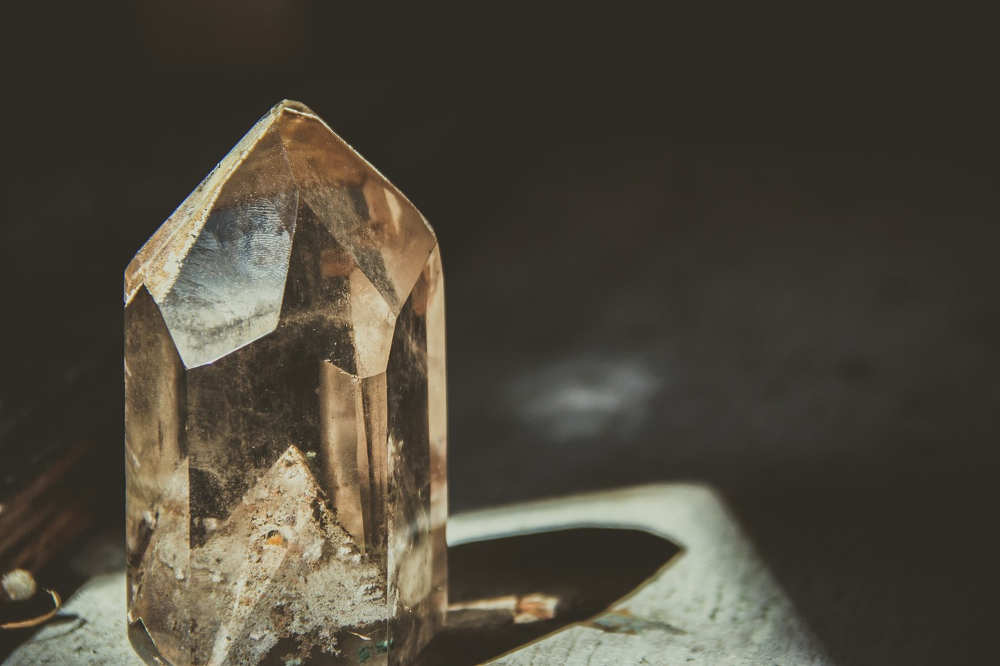

La chambre


La chambre à tachyons, active en France depuis 2019, est un espace spécialement conçu pour canaliser l'énergie tachyonique. Elle est équipée de cristaux tachyonisés placés à des points stratégiques, ainsi que d'un matelas disposé sur une onde de forme entourée de géométries sacrées. Cet environnement favorise la connexion avec un canal de Lumière Pure, offrant un cadre propice à la relaxation et à l’harmonisation énergétique. Après un accueil par le gardien des lieux, les participants sont invités à s'allonger et à se détendre pour se laisser imprégner par cette énergie.